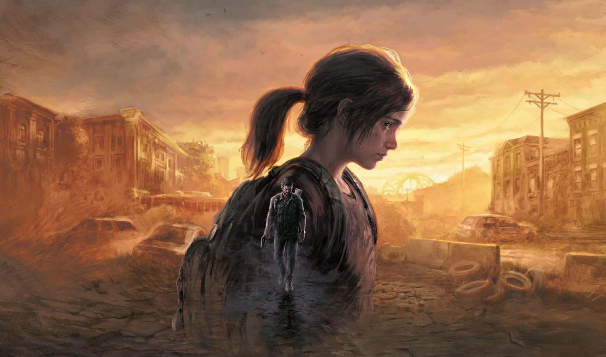

Sobreviver é só o começo
Vinte anos depois de um surto de cordyceps derrubar a civilização, Joel, um contrabandista endurecido pela perda, é contratado para tirar Ellie, de 14 anos, da zona de quarentena de Boston. A missão se transforma em uma travessia brutal pelos Estados Unidos.
No caminho, os dois descobrem que Ellie é imune à infecção e que ela talvez seja a chave para uma cura. O final, no hospital dos Vaga-lumes em Salt Lake City, é um dos mais debatidos da história dos games.
Part I (2022) é o remake completo do original para PS5, com novos gráficos, animações, inteligência artificial, opções de acessibilidade e a DLC Left Behind incluída.